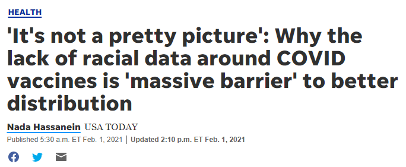
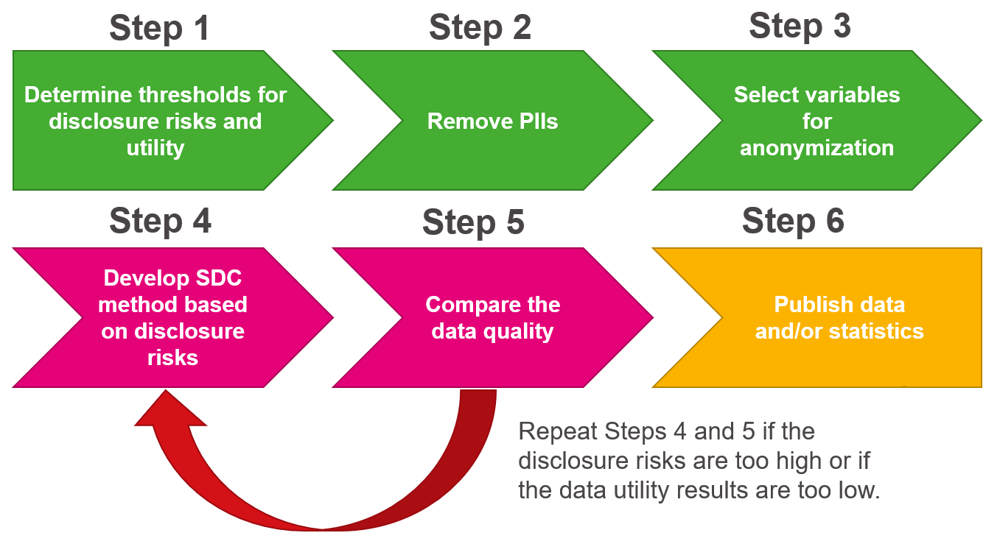
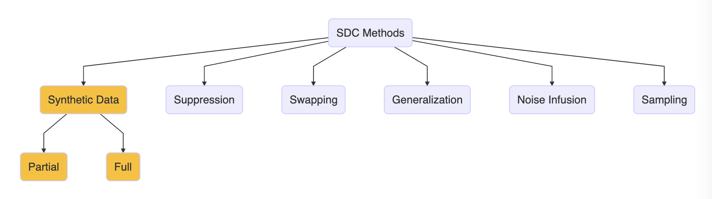
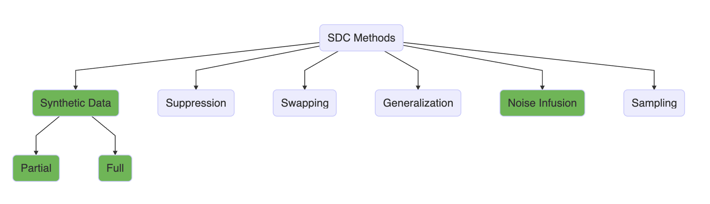
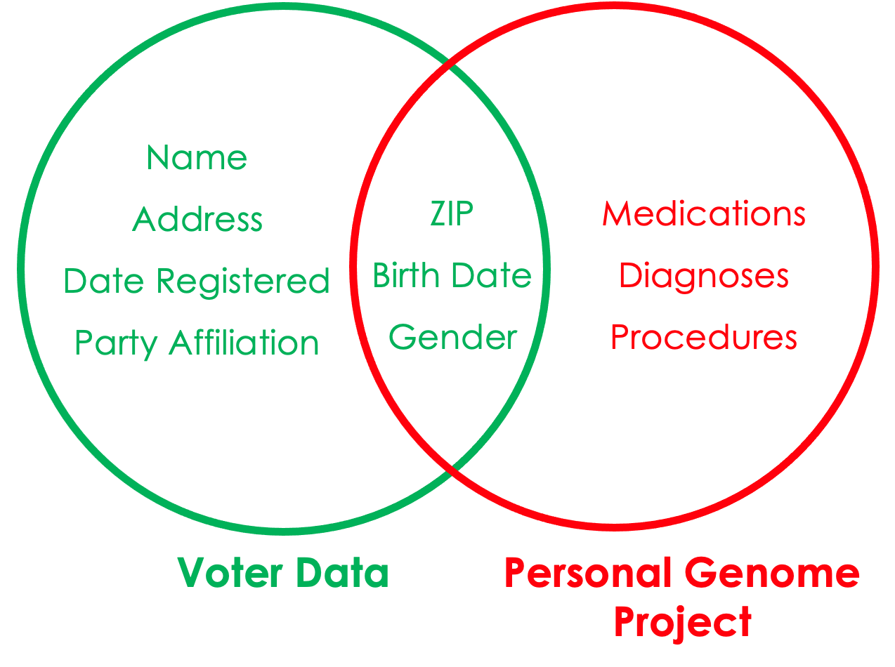

| species | bill_length_mm | sex |
|---|---|---|
| Chinstrap | 51.3 | male |
| Gentoo | 44.0 | female |
| Chinstrap | 51.4 | male |
| Chinstrap | 45.4 | female |
| Adelie | 36.2 | female |
1 Introduction to Data Privacy
1.1 Why is Data Privacy important?
- Modern computing and technology have made it easy to collect and process large amounts of data.
- Malicious actors can use computing power and advanced techniques to reidentify individuals by linking supposedly anonymized records with public databases.
- This kind of attack is called a “record linkage” attack. The following are some examples of famous record linkage attacks.
- In 1997, MA Gov. Bill Weld announced the public release of insurance data for researchers. He assured the public that PII had been deleted. A few days later, Dr. Latanya Sweeney, then a MIT graduate student, mailed to Weld’s office his personal medical information. She purchased voter data and linked Weld’s birth date, gender, and zip code to his health records. And this was back in 1997, when computing power was minuscule, and social media didn’t exist!
- A study by Dr. Latanya Sweeney based on the 1990 Census (Sweeney 2000) found that the 87% of the US population had reported characteristics that likely made them unique based only on ZIP, gender, and date of birth.
- Malicious actors can also reconstruct databases or by reconstructing databases from statistics.
- Releasing granular data can be of immense value to researchers. For example, cell phone data are invaluable for emergency responses to natural disasters, and granular medical data will lead to better treatment and development of cures.

- More granular data are also important for understanding equity, particularly for smaller populations and subgroups.
1.2 What is Data Privacy?
Data Privacy
Data Privacy is the ability “to determine what information about ourselves we will share with others.” (Fellegi 1972).
There are at least three major threats to data privacy.
- Hackers: adversaries who steal confidential information through unauthorized access.
- Snoopers: adversaries who reconstruct confidential information from data releases.
- Hoarders: stewards who collect data but don’t release the data even if respondents want the information released.
There are differing notions of what should and shouldn’t be private, which may include being able to opt out of or opt into disclosure protections.
Data privacy is a broad topic, which includes data security, encryption, access to data, etc. We will not be covering privacy breaches from unauthorized access to a database (e.g., hackers).
We are instead focused on privacy preserving access to data.
Although data privacy and data confidentiality are certainly related, they are different, and both play a role in limiting statistical disclosure risk.
Confidentiality
Confidentiality is “the agreement, explicit or implicit, between data subject and data collector regarding the extent to which access by others to personal information is allowed” (Fienberg and Jin 2018).
There is often a tension between privacy and data utility (or usefulness). This tension is referred to in the data privacy literature as the “privacy-utility trade-off.”
- For example, some universities require students to install an app that tracks their movements on campus. This allows professors teaching large classes with 100+ students to know their students’ punctuality, tardiness, or class absences. This tracking can be invasive, especially for students who rarely leave campus except during holidays, because the university could track their movements outside of class. However, the tracking app could alert students about an active shooter on campus, identify safe buildings to seek refuge, and notify emergency contacts regarding the students’ safety.
Data utility, quality, accuracy, or usefulness
Data utility, quality, accuracy, or usefulness is how practically useful or accurate to the data are for research and analysis purposes.
Generally, higher utility = more privacy risks and vice versa.
In the data privacy ecosystem there are the following stakeholders:
Data users and practitioners
Data users and practitioners are individuals who consume the data, such as analysts, researchers, planners, and decision-makers.
Data privacy experts or researchers
Data privacy experts or researchers are individuals who specialize in developing data privacy and confidentiality methods.
Data curators, maintainers, or stewards
Data curators, maintainers, or stewards are individuals who posess the data and are responsible for its safekeeping.
Data intruders, attackers, or adversaries
Data intruders, attackers, or adversaries are individuals who try to gather sensitive information from the confidential data.
- In addition, there are many versions of the data we should define:
Original dataset:
Original dataset is the uncleaned, unprotected version of the data.
For example, raw Decennial census microdata, which are never publicly released.
Confidential or gold standard dataset
Confidential or gold standard dataset is the cleaned version (meaning edited for inaccuracies or inconsistencies) of the data; often referred to as the gold standard or actual data for analysis.
For example, the Census Edited File that is the final confidential data for the 2020 Census. This dataset is never publicly released but may be made available to others who are sworn to protect confidentiality and who are provided access in a secure environment, such as a Federal Statistical Research Data Center.
Public dataset
Public dataset is the publicly released version of the confidential data.
For example, the US Census Bureau’s public tables and datasets.
1.3 Data Privacy Workflow
Data users have traditionally gained access to data via:
direct access to the confidential data if they are trusted users (e.g., obtaining Special Sworn Status to use the Federal Statistical Research Data Centers).
Access to public data or statistics, such as public microdata and summary tables, that the data curators and privacy experts produced with modification to protect confidentiality.
The latter is how most data users gain access to information from confidential data and what we will focus on for this course. To create public data or statistics, data curators rely on statistical disclosure control (SDC) or limitation (SDL) methods to preserve data confidentiality. The process of releasing this information publicly often involves the steps shown in Figure 1.1.

- There is potential for additional disclosure risks if Step 4 and Step 5 are repeated too many times. We can think of this like data leakage in a machine learning/predictive modeling framework.
1.4 Overview of SDC
Statistical Disclosure Control (SDC)
Statistical Disclosure Control (SDC) or Statistical Disclosure Limitation (SDL) is a field of study that aims to develop methods for releasing high-quality data products while preserving data confidentiality as a means of maintaining privacy.
SDC methods have existed within statistics and the social sciences since the mid-twentieth century.
Below is an opinionated, and incomplete, overview of various SDC methods. For this set of training sessions, we will focus in-depth on the methods in yellow.

Here are a few traditional methods from the SDC literature. See Matthews and Harel (2011) for more information.
Suppression: Not releasing data about certain subgroups or witholding information about certaint observations.
Swapping: The exchange of sensitive values among sample units with similar characteristics.
Generalization: Aggregating variables into larger units (e.g., reporting state rather than zip code) or top/bottom coding (limiting values below/above a threshold to the threshold value).
Noise Infusion: Adding random noise, often to continuous variables which can maintain univariate distributions.
Sampling: Only releasing a sample of individual records.
The problem with the above approaches is that it really limits the utility of the data.
Mitra and Reiter (2006) found that a 5 percent swapping of 2 identifying variables in the 1987 Survey of Youth in Custody invalidated statistical hypothesis tests in regression.
Top/bottom coding eliminates information at the tails of the distributions, degrading analyses that depend on the entire distribution (Fuller 1993; Reiter, Wang, and Zhang, 2014).
Synthetic data can help overcome some of these issues.
1.5 Formal Privacy
Formal privacy centers around a formal mathematical definition of privacy that measures how much privacy leakage occurs.
A formally private method provides mathematically provable protection to respondents and allows policy makers to manage the trade-off between data accuracy and privacy protection through tunable parameters for multiple statistics.
Any SDC method/algorithm can be formally private if it meets the specific mathematical definition.
Formal privacy is a definition/threshold for methods to meet, not a method in and of itself.
Below in green are the SDC methods which have formally private versions.

In this course, we will cover 2 kinds of formal privacy definitions.
Differential Privacy (DP): A mathematical definition of what it means to have privacy. The definition has a parameter called epsilon that control how much privacy loss occurs.
Approximate Differential Privacy: Similar to DP in the same framework, but it relaxes the definition.
Threat model
A threat model is a set of assumptions for how data intruders will attack the data, including computing power, access to external data sources, etc.
A key difference between traditional SDC methods and formally private SDC methods is the threat models behind each approach.
Formal privacy definitions assume the worst possible scenario, where an attacker has all the information but 1 record, has every possible version of the dataset (accounts for all future datasets), and unlimited computing power.
Formally private methods don’t label particular variables as confidential/sensitive, but instead treats them all as sensitive due to the possibility of reidentifcation.
1.6 Measuring Utility Metrics and Disclosure Risks
1.6.1 Disclosure Risks
- Generally there are 3 kinds of disclosure risk:
- Identity disclosure risk: occurs if the data intruder associates a known individual with a public data record (e.g., a record linkage attack or when a data adversary combines one or more external data sources to identify individuals in the public data).

Attribute disclosure risk: occurs if the data intruder determines new characteristics (or attributes) of an individual based on the information available through public data or statistics (e.g., if a dataset shows that all people age 50 or older in a city are on Medicaid, then the data adversary knows that any person in that city above age 50 is on Medicaid). This information is learned without identifying a specific individual in the data!
Inferential disclosure risk: occurs if the data intruder predicts the value of some characteristic from an individual more accurately with the public data or statistic than would otherwise have been possible (e.g., if a public homeownership dataset reports a high correlation between the purchase price of a home and family income, a data adversary could infer another person’s income based on purchase price listed on Redfin or Zillow).
- Important note: acceptable disclosure risks are usually determined by law.
1.6.2 Utility Measures
- Generally there are 2 ways to measure utility of the data:
General Utility (aka global utilty): measures the univariate and multivariate distributional similarity between the confidential data and the public data (e.g., sample means, sample variances, and the variance-covariance matrix).
Specific Utility (aka outcome specific utility): measures the similarity of results for a specific analysis (or analyses) of the confidential and public data (e.g., comparing the coefficients in regression models).
- Higher utility = higher accuracy and usefulness of the data, so this is a key part of selecting an appropriate SDC method.
1.7 Exercise 1
Let’s say a researcher generates a synthetic version of a dataset on penguins species. The first 5 rows of the gold standard dataset looks like this:
One of the metrics to assess data utility was the overall counts of penguin species across the synthetic and gold standard data, which look like this:
| species | # conf. data | # synthetic data |
|---|---|---|
| Adelie | 152 | 138 |
| Chinstrap | 68 | 68 |
| Gentoo | 124 | 116 |
Would the above counts be considered a global utility metric or a specific utility metric and why?
Would the above counts be considered a global utility metric or a specific utility metric and why?
It’s likely a global utility metric because it evaluates the general statistical properties of the synthetic data compared to the confidential data.
1.8 Exercise 2
Researchers (Mayer, Mutchler, and Mitchell 2016) looked at telephone metadata, which included times, duration and outgoing numbers of telephone calls. They found that 1 of the records in the data placed frequent calls to a local firearm dealer that prominently advertises a specialty in the AR semiautomatic rifle platform. The participant also placed lengthy calls to the customer support hotline for a major firearm manufacturer which produces a popular AR line of rifles. Using publicly available data, they were able to confirm the participants identity and confirm that he owned an AR-15.
In this example what kinds of disclosures happened? (Hint: there were two!)
In this example what kinds of disclosures happened? (Hint: there were two!)
Identity disclosure and attribute disclosure
1.9 Exercise 3
Why is it difficult to release public data that both maintains data utility and preserves individual privacy?
Why is it difficult to release public data that both maintains data utility and preserves individual privacy?
There is a tradeoff between privacy and utility. Releasing a public dataset with no modifications would maximize utility, but provide no privacy protections. As privacy protections are applied, the utility of the dataset is reduced.
1.10 Suggested Reading - General Data Privacy
Matthews, G. J., & Harel, O. (2011). Data confidentiality: A review of methods for statistical disclosure limitation and methods for assessing privacy. Statistics Surveys, 5, 1-29. link
Bowen, CMK., (2021). “Personal Privacy and the Public Good: Balancing Data Privacy and Data Utility.” Urban Institute. link
Benschop, T. and Welch, M. (n.d.) Statistical Disclosure Control for Microdata: A Practice Guide. Retrieved (insert date), from https://sdcpractice.readthedocs.io/en/latest/